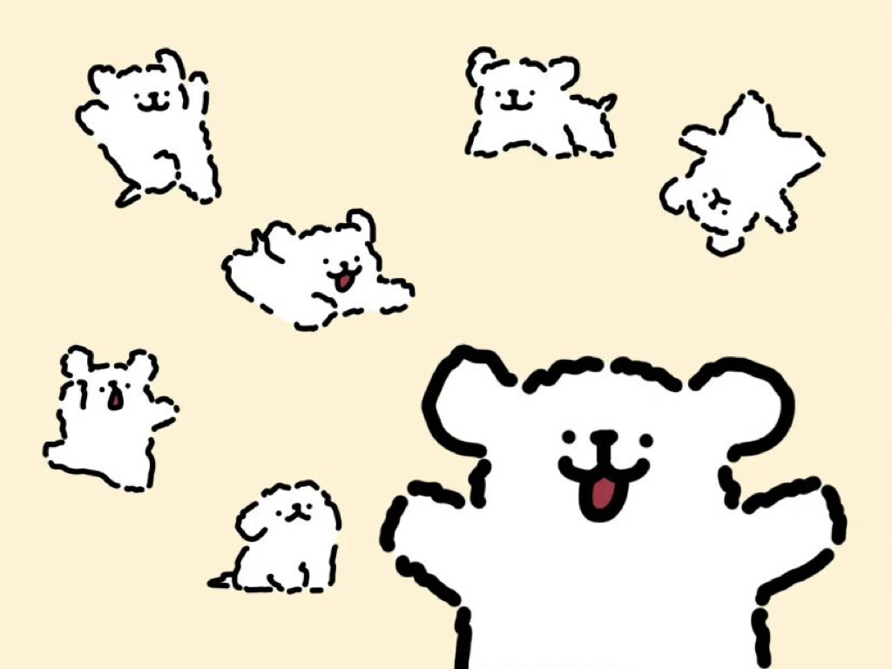

小狗请你听《稻香》呀！
还记得你说家是唯一的城堡
随着稻香河流继续奔跑
微微笑 小时候的梦我知道
不要哭让萤火虫带着你逃跑
乡间的歌谣永远的依靠
回家吧 回到最初的美好
对这个世界如果你有太多的抱怨
跌倒了就不敢继续往前走
为什么人要这么的脆弱堕落
请你打开电视看看
多少人为生命在努力勇敢的走下去
我们是不是该知足
珍惜一切就算没有拥有
还记得你说家是唯一的城堡
随着稻香河流继续奔跑
微微笑 小时候的梦我知道
不要哭让萤火虫带着你逃跑
乡间的歌谣永远的依靠
回家吧 回到最初的美好
不要这么容易就想放弃
就像我说的
追不到的梦想换个梦不就得了
为自己的人生鲜艳上色
先把爱涂上喜欢的颜色
笑一个吧
功成名就不是目的
让自己快乐快乐这才叫做意义
童年的纸飞机
现在终于飞回我手里
所谓的那快乐
赤脚在田里追蜻蜓追到累了
偷摘水果被蜜蜂给叮到怕了
谁在偷笑呢
我靠着稻草人
唱着歌 唱着歌
我 睡着了 喔喔
我 睡着了 喔喔
我睡着了
珍惜一切 就算没有拥有
还记得你说家是唯一的城堡
随着稻香河流继续奔跑
微微笑 小时候的梦我知道
不要哭让萤火虫带着你逃跑
乡间的歌谣永远的依靠
回家吧 回到最初的美好
不要哭让萤火虫带着你逃跑
乡间的歌谣永远的依靠
回家吧 回到最初的美好
